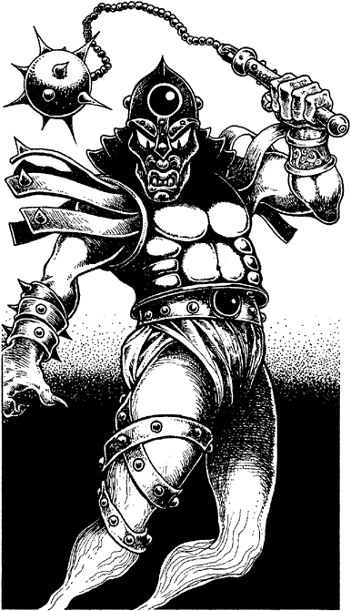

27
Stepping carefully through the slime-smeared rubble, you stop for a moment to catch your breath and survey the shattered keep of Kazan-Oud. It is a desolate sight. Only stone buildings remain intact, and everything is covered with creepers and mildew. A great fire must have ravaged the inner fortress to have resulted in such total devastation.
In the centre of the keep stands the Great Hall, still an imposing stronghold and made all the more frightening by the constant flash of green lightning. Beyond its burnt and fungus-covered wooden door, twisted tree forms, with sharp, barbed thorns, sprawl across the cracked flagstones like coils of steel wire. You are about to enter when a movement in the air around your head arrests you. A shape is taking form in the doorway, a shadowy figure with flaming red eyes. An icy chill grips your heart as it sweeps past you with a swirling rush of wind. You spin round to see it hovering in the sky, its shadowy hand now gripping a great spiked ball and chain. It shrieks an unearthly cry, and the ball whistles down towards your unprotected face.

If you have the Magnakai Discipline of Psi-screen, turn to 38.
If you do not possess this skill, you must prepare to defend yourself, for there is no time to evade this sudden attack. Owing to the speed of the attack, deduct 3 points from your COMBAT SKILL total for the first three rounds of combat (unless you have the Magnakai Discipline of Huntmastery). 4
Oudakon: COMBAT SKILL 20 ENDURANCE 29
If you win the combat, turn to 5.
Footnotes
[4] You may decide to add a +5 bonus to your COMBAT SKILL if you are using the Jewelled Mace (cf. Shadow on the Sand Section 253).